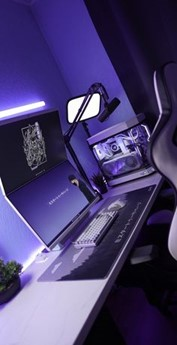
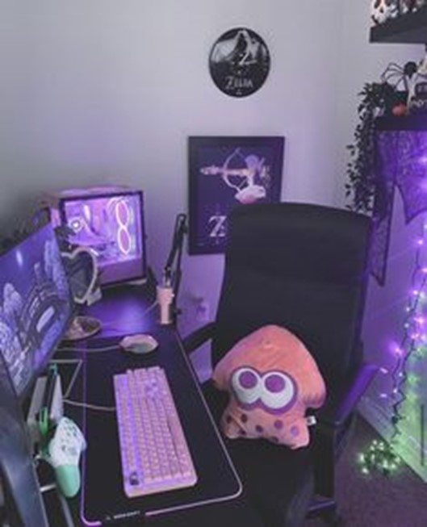
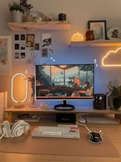
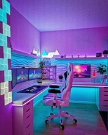

The Space
Before delving into the specifics of individual components and accessories, it's crucial to establish the foundational elements of a gaming setup. The base environment serves as the canvas upon which the entire setup is built, encompassing factors such as lighting, layout, and overall ambiance. Creating an optimal base environment involves considerations such as the placement of furniture, organization of cables, and management of clutter to ensure a clean and efficient workspace. Additionally, factors like lighting play a significant role in setting the mood and enhancing visibility during gaming sessions. By prioritizing the establishment of a conducive base environment, gamers can lay the groundwork for a seamless and enjoyable gaming experience, setting the stage for the integration of additional components and accessories.
The Desk
At the core of your gaming room lies the desk, the epicenter of all activity. Every keystroke, every movement, occurs upon its surface. It's paramount that this vital piece of furniture prioritizes comfort and doesn't compromise your well-being. An ergonomic desk is indispensable, ensuring proper posture and minimizing strain during prolonged gaming sessions. Investing in a height-adjustable desk not only enhances your comfort but also safeguards your health in the long run. If you're unsure about selecting the perfect gaming desk to meet your needs, don't hesitate to seek assistance. There are also various desk sizes available to accommodate your specific requirements and preferences. Desks come in a range of sizes, offering versatility to suit individual needs and preferences. Whether you prefer a compact desk for a cozy gaming corner or a spacious surface for multiple monitors and peripherals, there's a size that fits your vision for the ideal gaming setup. Consider the dimensions carefully to ensure the desk complements the layout of your gaming room and provides ample space for gaming essentials without feeling cramped or cluttered. From small and minimalist designs to large and expansive surfaces, the diverse range of desk sizes caters to gamers of all styles and preferences, allowing you to create a gaming environment tailored to your specific needs. Choosing the right desk is not just about aesthetics—it's about prioritizing your health and optimizing your gaming experience.
The Chair
While a gaming chair might not initially seem like a must-have, its importance cannot be overstated. Gaming serves as a sanctuary from the demands of reality, emphasizing relaxation even during the most intense gameplay sessions. Whether you opt for an ergonomic office chair or a dedicated gaming chair depends entirely on personal preference. However, one fundamental guideline remains: the chosen gaming chair should seamlessly integrate with the room's design. Size considerations are paramount, as your height and weight determine the ideal chair fit. Ultimately, the perfect chair should facilitate natural movements and adjust to its user. Additionally, ergonomic seating options may feature a neck cushion for enhanced comfort during extended gaming sessions. A comfortable gaming chair, equipped with proper back and lumbar support, is indispensable for your gaming room setup. Not only does it enhance comfort during extended gaming sessions, but it also promotes good posture and guards against back pain. Investing in a quality gaming chair is a wise decision, ensuring that your gaming experience remains enjoyable and free from discomfort or strain.
Storage, Lights, and Clutter
The ideal gaming setup room is meticulously designed to deliver the ultimate gaming experience, boasting the latest gaming hardware, ample seating, and a cozy ambiance. Consider incorporating floating shelves to optimize space utilization. Ample storage accommodates gaming equipment. Adding suitable lighting to your gaming setup can truly elevate the entire experience. While lighting is especially crucial for streamers to enhance their content for viewers, it can enhance anyone's gaming experience. Whether it's creating a dynamic backdrop for streaming or simply enhancing the ambiance of your gaming room, lighting adds that extra touch of immersion. If you believe it will enhance your gaming experience, then it's worth considering and implementing into your setup.
Decorating your gaming setup can significantly contribute to creating a unique and inviting atmosphere. Popular decor choices for gaming setups include posters featuring favorite games or characters, action figures, collectibles, fan art, plushies, and matching screensavers. Adding plants can enhance the ambiance and elevate the feel-good factor of your gaming space. Whether your gaming setup leans towards a minimalist or maximalist aesthetic, the choice of decorations ultimately reflects the gamer's individual taste and can enhance the overall immersive experience. However, it's essential to strike a balance between decoration and functionality to avoid overwhelming the space and impacting gameplay performance negatively. Achieving a successful setup entails maintaining harmony between decor elements and ensuring they complement the gaming environment without becoming distracting.